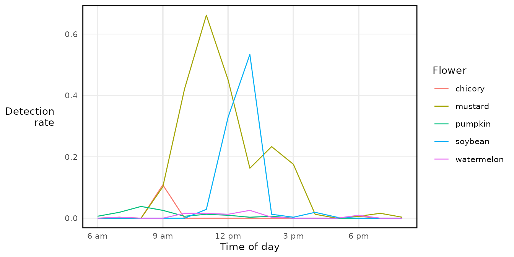

buzzr works with two different representations of time:
-
File-time (
start_filetime): seconds elapsed since the start of the audio file. This is what buzzdetect writes directly — it knows nothing about when you pressed record. -
Date-time (
start_datetime): an absolute timestamp, like2023-08-09 06:00:00. To get this, buzzr needs to know when the recording started, which it reads from the file name.
This vignette explains how buzzr converts file names into date-times, how to handle mixed recorder types, and how to work with the resulting timestamps for plotting and modelling.
Reading a timestamp from a file name
Most field recorders embed the recording start time in the file name.
buzzr reads this using the same POSIX format codes as base R’s
strptime(). Common examples:
| File name pattern | Format string |
|---|---|
230809_0600 (YYMMDD_HHMM) |
'%y%m%d_%H%M' |
20230809_000000 (YYYYMMDD_HHMMSS) |
'%Y%m%d_%H%M%S' |
2023-08-09_00-00-00 |
'%Y-%m-%d_%H-%M-%S' |
The Five Flowers dataset uses the YYMMDD_HHMM pattern.
Let’s parse a single file:
path <- system.file(
'extdata/five_flowers_snip/soybean/53/230809_0600_buzzdetect.csv',
package = 'buzzr'
)
# Without posix_formats: time stays as file-time (seconds from file start)
head(read_results(path), 3)
#> start_filetime activation_ins_trill activation_mech_plane
#> <num> <num> <num>
#> 1: 0.00 -2.8 -2.3
#> 2: 0.96 -2.5 -2.7
#> 3: 1.92 -2.2 -2.4
#> activation_ambient_rain activation_ins_buzz
#> <num> <num>
#> 1: -2.4 -2.2
#> 2: -2.5 -2.3
#> 3: -2.4 -2.4
# With posix_formats: file-time is converted to an absolute date-time
head(read_results(path, posix_formats = '%y%m%d_%H%M', tz = 'America/New_York'), 3)
#> start_datetime activation_ins_trill activation_mech_plane
#> <POSc> <num> <num>
#> 1: 2023-08-09 06:00:00 -2.8 -2.3
#> 2: 2023-08-09 06:00:00 -2.5 -2.7
#> 3: 2023-08-09 06:00:01 -2.2 -2.4
#> activation_ambient_rain activation_ins_buzz
#> <num> <num>
#> 1: -2.4 -2.2
#> 2: -2.5 -2.3
#> 3: -2.4 -2.4The _buzzdetect suffix and file extension are stripped
before matching, so your format string only needs to describe the
timestamp part of the name.
You can also call file_start_time() directly if you just
want the recording’s start time without reading the full file:
file_start_time(path, posix_formats = '%y%m%d_%H%M', tz = 'America/New_York')
#> [1] "2023-08-09 06:00:00 EDT"It works on a vector of paths too:
dir <- system.file('extdata/five_flowers_snip', package = 'buzzr')
paths <- list.files(dir, pattern = '_buzzdetect', recursive = TRUE, full.names = TRUE)
file_start_time(paths, posix_formats = '%y%m%d_%H%M', tz = 'America/New_York')
#> [1] "2025-07-04 06:00:00 EDT" "2025-07-04 07:00:00 EDT"
#> [3] "2025-07-04 08:00:00 EDT" "2025-07-04 09:00:00 EDT"
#> [5] "2025-07-04 10:00:00 EDT" "2025-07-04 11:00:00 EDT"
#> [7] "2025-07-04 12:00:00 EDT" "2025-07-04 13:00:00 EDT"
#> [9] "2025-07-04 14:00:00 EDT" "2025-07-04 15:00:00 EDT"
#> [11] "2025-07-04 16:00:00 EDT" "2025-07-04 17:00:00 EDT"
#> [13] "2025-07-04 18:00:00 EDT" "2025-07-04 19:00:00 EDT"
#> [15] "2025-07-04 20:00:00 EDT" "2024-09-04 06:00:00 EDT"
#> [17] "2024-09-04 07:00:00 EDT" "2024-09-04 08:00:00 EDT"
#> [19] "2024-09-04 09:00:00 EDT" "2024-09-04 10:00:00 EDT"
#> [21] "2024-09-04 11:00:00 EDT" "2024-09-04 12:00:00 EDT"
#> [23] "2024-09-04 13:00:00 EDT" "2024-09-04 14:00:00 EDT"
#> [25] "2024-09-04 15:00:00 EDT" "2024-09-04 16:00:00 EDT"
#> [27] "2024-09-04 17:00:00 EDT" "2024-09-04 18:00:00 EDT"
#> [29] "2024-09-04 19:00:00 EDT" "2024-09-04 20:00:00 EDT"
#> [31] "2024-08-08 06:00:00 EDT" "2024-08-08 07:00:00 EDT"
#> [33] "2024-08-08 08:00:00 EDT" "2024-08-08 09:00:00 EDT"
#> [35] "2024-08-08 10:00:00 EDT" "2024-08-08 11:00:00 EDT"
#> [37] "2024-08-08 12:00:00 EDT" "2024-08-08 13:00:00 EDT"
#> [39] "2024-08-08 14:00:00 EDT" "2024-08-08 15:00:00 EDT"
#> [41] "2024-08-08 16:00:00 EDT" "2024-08-08 17:00:00 EDT"
#> [43] "2024-08-08 18:00:00 EDT" "2024-08-08 19:00:00 EDT"
#> [45] "2024-08-08 20:00:00 EDT" "2023-08-09 06:00:00 EDT"
#> [47] "2023-08-09 07:00:00 EDT" "2023-08-09 08:00:00 EDT"
#> [49] "2023-08-09 09:00:00 EDT" "2023-08-09 10:00:00 EDT"
#> [51] "2023-08-09 11:00:00 EDT" "2023-08-09 12:00:00 EDT"
#> [53] "2023-08-09 13:00:00 EDT" "2023-08-09 14:00:00 EDT"
#> [55] "2023-08-09 15:00:00 EDT" "2023-08-09 16:00:00 EDT"
#> [57] "2023-08-09 17:00:00 EDT" "2023-08-09 18:00:00 EDT"
#> [59] "2023-08-09 19:00:00 EDT" "2023-08-09 20:00:00 EDT"
#> [61] "2024-07-27 06:00:00 EDT" "2024-07-27 07:00:00 EDT"
#> [63] "2024-07-27 08:00:00 EDT" "2024-07-27 09:00:00 EDT"
#> [65] "2024-07-27 10:00:00 EDT" "2024-07-27 11:00:00 EDT"
#> [67] "2024-07-27 12:00:00 EDT" "2024-07-27 13:00:00 EDT"
#> [69] "2024-07-27 14:00:00 EDT" "2024-07-27 15:00:00 EDT"
#> [71] "2024-07-27 16:00:00 EDT" "2024-07-27 17:00:00 EDT"
#> [73] "2024-07-27 18:00:00 EDT" "2024-07-27 19:00:00 EDT"
#> [75] "2024-07-27 20:00:00 EDT"Time zones
Always pass a tz argument. If you omit it, R uses your
system time zone, which will silently produce wrong results if you
analyse data collected in a different zone.
# Same file, two different time zones — note the hour difference
file_start_time(path, posix_formats = '%y%m%d_%H%M', tz = 'America/New_York')
#> [1] "2023-08-09 06:00:00 EDT"
file_start_time(path, posix_formats = '%y%m%d_%H%M', tz = 'America/Chicago')
#> [1] "2023-08-09 06:00:00 CDT"Use OlsonNames() to browse valid time zone strings.
Keeping both time columns
By default, start_filetime is dropped once
start_datetime is added. Set
drop_filetime = FALSE to keep both:
head(
read_results(
path,
posix_formats = '%y%m%d_%H%M',
tz = 'America/New_York',
drop_filetime = FALSE
),
3
)
#> start_datetime start_filetime activation_ins_trill
#> <POSc> <num> <num>
#> 1: 2023-08-09 06:00:00 0.00 -2.8
#> 2: 2023-08-09 06:00:00 0.96 -2.5
#> 3: 2023-08-09 06:00:01 1.92 -2.2
#> activation_mech_plane activation_ambient_rain activation_ins_buzz
#> <num> <num> <num>
#> 1: -2.3 -2.4 -2.2
#> 2: -2.7 -2.5 -2.3
#> 3: -2.4 -2.4 -2.4File-time is useful if you want to extract audio clips later (e.g. using FFmpeg to cut from a specific second in the source file).
Mixed recorder types: multiple format strings
If your experiment used more than one recorder model, the file names may follow different timestamp conventions. Supply all formats as a character vector:
# Imagine two recorder types in the same experiment:
# AudioMoth: YYYYMMDD_HHMMSS e.g. 20230809_060000_buzzdetect.csv
# SongMeter: YYMMDD_HHMM e.g. 230809_0600_buzzdetect.csv
paths_mixed <- c(
'site_a/audiomoth/20230809_060000_buzzdetect.csv', # AudioMoth
'site_b/songmeter/230809_0600_buzzdetect.csv' # SongMeter
)
formats_mixed <- c('%Y%m%d_%H%M%S', '%y%m%d_%H%M')When each file matches exactly one format, everything resolves cleanly:
file_start_time(paths_mixed, posix_formats = formats_mixed, tz = 'America/New_York')
#> [1] "2023-08-09 06:00:00 EDT" "2023-08-09 06:00:00 EDT"When a file matches two formats with different results
This is where things get tricky. A SongMeter file like
230809_0600 will match %y%m%d_%H%M (→ 2023)
but it can also match %Y%m%d_%H%M%S if interpreted as year
0230 (an implausible date, but R won’t reject it). More dangerously,
20230809_060000 matches %Y%m%d_%H%M%S (→
2023-08-09 06:00:00) but also %y%m%d_%H%M (→ year 2020,
completely wrong).
By default (first_match = FALSE), buzzr returns
NA and warns you when formats conflict:
# Construct a path that matches both formats ambiguously
ambiguous_path <- 'site/recorder/20230809_060000_buzzdetect.csv'
file_start_time(
ambiguous_path,
posix_formats = c('%Y%m%d_%H%M%S', '%y%m%d_%H%M'),
tz = 'America/New_York',
first_match = FALSE
)
#> [1] "2023-08-09 06:00:00 EDT"If you know which format should take priority, set
first_match = TRUE to accept the first matching format and
move on:
# With '%Y%m%d_%H%M%S' listed first, the four-digit-year parse wins
file_start_time(
ambiguous_path,
posix_formats = c('%Y%m%d_%H%M%S', '%y%m%d_%H%M'),
tz = 'America/New_York',
first_match = TRUE
)
#> [1] "2023-08-09 06:00:00 EDT"
# Swap the order — now the two-digit-year parse wins (wrong!)
file_start_time(
ambiguous_path,
posix_formats = c('%y%m%d_%H%M', '%Y%m%d_%H%M%S'),
tz = 'America/New_York',
first_match = TRUE
)
#> [1] "2023-08-09 06:00:00 EDT"The order of posix_formats matters when
first_match = TRUE. Put the most specific (or most trusted)
format first.
When a file matches two formats with the same result
If two formats resolve to identical timestamps, buzzr silently deduplicates them — no warning, no NA:
# These two formats both parse '230809_0600' as 2023-08-09 06:00:00
# (one by coincidence of the numeric overlap)
file_start_time(
'site/recorder/230809_0600_buzzdetect.csv',
posix_formats = c('%y%m%d_%H%M', '%y%m%d_%H%M'), # duplicate format
tz = 'America/New_York'
)
#> [1] "2023-08-09 06:00:00 EDT"If no format matches
buzzr returns NA with a warning, so downstream code
doesn’t fail silently:
file_start_time(
'site/recorder/no_timestamp_here_buzzdetect.csv',
posix_formats = '%y%m%d_%H%M',
tz = 'America/New_York'
)
#> Warning: Returning NA for start time of file
#> 'site/recorder/no_timestamp_here_buzzdetect.csv'. No POSIX matches found.
#> [1] NAPlotting time of day: commontime()
When recordings span multiple calendar days you can’t overlay them
directly on a datetime axis — the dates differ even if the time of day
is the same. commontime() solves this by setting every date
to the same arbitrary day (2000-01-01) while preserving the time of
day:
dir <- system.file('extdata/five_flowers_snip', package = 'buzzr')
binned <- bin_directory(
dir_results = dir,
thresholds = c(ins_buzz = -1.2),
posix_formats = '%y%m%d_%H%M',
tz = 'America/New_York',
dir_nesting = c('flower', 'recorder'),
binwidth = 20,
calculate_rate = TRUE
)
#> Grouping time bins using columns: flower, recorder
# Dates vary across the five recordings; commontime collapses them
range(binned$bin_datetime)
#> [1] "2023-08-09 06:00:00 EDT" "2025-07-04 20:00:00 EDT"
binned$time_of_day <- commontime(binned$bin_datetime, tz = 'America/New_York')
range(binned$time_of_day)
#> [1] "2000-01-01 06:00:00 EST" "2000-01-01 20:00:00 EST"Now all five flowers share the same x axis, regardless of which day they were recorded:
library(ggplot2)
ggplot(binned, aes(x = time_of_day, y = detectionrate_ins_buzz, color = flower)) +
geom_line() +
scale_x_datetime(labels = label_hour(tz = 'America/New_York')) +
labs(x = 'Time of day', y = 'Detection\nrate', color = 'Flower') +
theme_buzzr()
Always pass the same tz to
commontime() and label_hour(). If they differ,
the axis labels won’t match the data.
Numeric time of day: time_of_day()
For statistical modelling — circular regression, GAMs, peak-time
estimates — it’s more convenient to have time as a number.
time_of_day() returns either a proportion of the 24-hour
day or a decimal hour:
times <- as.POSIXct(
c('2023-08-09 00:00:00', '2023-08-09 06:00:00',
'2023-08-09 12:00:00', '2023-08-09 18:30:00'),
tz = 'America/New_York'
)
# Proportion: midnight = 0, noon = 0.5, next midnight = 1
time_of_day(times)
#> [1] 0.0000000 0.2500000 0.5000000 0.7708333
# Decimal hours: midnight = 0, 6 AM = 6, 6:30 PM = 18.5
time_of_day(times, time_format = 'hour')
#> [1] 0.0 6.0 12.0 18.5Unlike commontime(), this strips the date entirely and
returns a plain number, which is easier to pass to modelling
functions:
binned$hour <- time_of_day(binned$bin_datetime, time_format = 'hour')
# e.g. find the hour of peak detections for each flower
binned[, .SD[which.max(detectionrate_ins_buzz)][, .(peak_hour = hour)],
by = flower]
#> flower peak_hour
#> <char> <num>
#> 1: chicory 9
#> 2: mustard 11
#> 3: pumpkin 8
#> 4: soybean 13
#> 5: watermelon 13